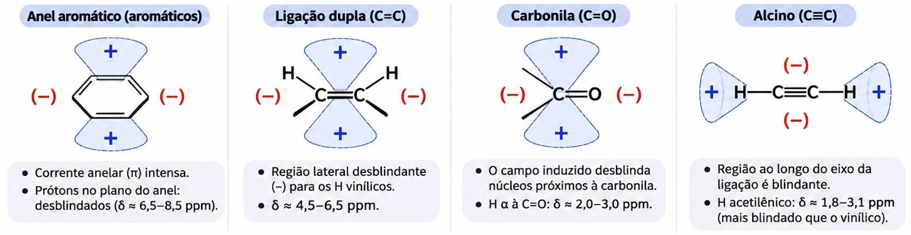

Ressonância Magnética Nuclear de ¹H
Como um ímã, uma onda de rádio e um punhado de prótons contam, átomo por átomo, como uma molécula orgânica é montada.
Prof. Dr. Rafael Vieira · Instituto Federal de Rondônia
O IV mostra os grupos. A EM mostra a massa. A RMN mostra o esqueleto.
Sinais
Quantos tipos de hidrogênio a molécula tem.
Deslocamento
Em que ambiente químico cada H está (vizinho de O? de C=O? de um anel?).
Integração
Quantos H há em cada tipo.
Desdobramento
Quantos H estão nos carbonos vizinhos.
Quatro informações em um único espectro. Junto com IV e EM, ela fecha a estrutura de um composto orgânico.
Núcleos também têm spin
- Assim como prótons e nêutrons (férmions), muitos núcleos apresentam momento angular de spin e, com ele, um momento magnético: comportam-se como pequenos ímãs.
- Regra prática: tem spin todo núcleo com massa ímpar, número atômico ímpar ou ambos.
- O número quântico de spin I define quantos estados (orientações) o núcleo pode ter: nº de estados = 2I + 1
- Valores de m: +I, (I − 1), …, (−I + 1), −I.
| Núcleo | I | nº de estados |
|---|---|---|
| ¹H | 1/2 | 2 (+½, −½) |
| ¹²C | 0 | 0 · "invisível" na RMN |
| ¹³C | 1/2 | 2 |
| ¹⁹F | 1/2 | 2 |
| ³⁵Cl | 3/2 | 4 (+3/2, +1/2, −1/2, −3/2) |
Nesta aula: o ¹H, com I = ½ e apenas dois estados possíveis.
Dois estados, duas energias
- Sem campo, os estados +½ e −½ têm a mesma energia (orientações ao acaso).
- Com um campo externo B₀, o spin +½ (alinhado ao campo) fica com energia menor e o −½ (oposto), com energia maior.
- A ressonância magnética nuclear ocorre quando núcleos alinhados absorvem energia e passam a ter spin oposto ao campo.
- Eabs = E−½ − E+½ = hν
Quanto mais forte o campo, maior a diferença de energia ΔE.
Frequência de ressonância: ν = (γ / 2π) · B₀
- ΔE = γ (h / 2π) B₀ = hν
- γ (razão giromagnética) é uma constante de cada núcleo. O ¹H tem um dos maiores γ: por isso é o núcleo mais sensível.
- A frequência cai na faixa das ondas de rádio (MHz). Por isso os aparelhos são chamados pela frequência do ¹H: "um RMN de 300 MHz" tem ímã de 7,05 T.
- O ¹³C tem só 1,1% de abundância e γ quatro vezes menor: o sinal é muito mais fraco.
| Isótopo | Abund. (%) | B₀ (T) | ν (MHz) | γ (10⁶ rad·T⁻¹s⁻¹) |
|---|---|---|---|---|
| ¹H | 99,98 | 1,00 · 1,41 · 2,35 · 7,05 | 42,6 · 60 · 100 · 300 | 267,53 |
| ²H | 0,0156 | 1,00 | 6,5 | 41,1 |
| ¹³C | 1,108 | 1,00 · 7,05 | 10,7 · 75,0 | 67,28 |
| ¹⁹F | 100 | 1,00 | 40,0 | 251,7 |
| ³¹P | 100 | 1,00 | 17,2 | 108,3 |
Dados de Pavia et al., Introdução à Espectroscopia.
O núcleo precessa como um pião
- No campo B₀, o eixo do spin gira em torno da direção do campo: é a precessão, com a frequência de Larmor.
- Quando chega uma radiação de radiofrequência com a mesma frequência da precessão, os dois "entram em fase" e há absorção: o spin inverte (+½ → −½).
- Exemplo clássico: a 1,41 T (14.100 gauss), o ¹H precessa a 60 MHz e absorve radiação de 60 MHz.
- É uma ressonância, como empurrar um balanço no ritmo certo.
Os elétrons protegem o núcleo
- No campo B₀, os elétrons ao redor do núcleo circulam e geram um campo magnético induzido oposto ao aplicado.
- O núcleo "sente" um campo menor: Befetivo = B₀ − Binduzido. Esse efeito é a blindagem diamagnética.
- Quanto maior a densidade eletrônica, maior o campo induzido, mais blindado o H e menor a frequência em que ele absorve.
- Um H vizinho de um átomo eletronegativo (Cl, O…) perde densidade eletrônica: fica desblindado e absorve em frequência maior.
Deslocamento químico δ
- As diferenças de frequência causadas pela blindagem são minúsculas (alguns Hz em milhões). Não se mede a frequência absoluta: mede-se a diferença em relação a um padrão, o TMS.
- Problema: o deslocamento em Hz depende do campo do aparelho. A solução é dividir pela frequência do aparelho:
- δ (ppm) = deslocamento do TMS (Hz) ÷ frequência do aparelho (MHz)
CH₃Br
162 Hz ÷ 60 MHz = 2,70 ppm · 270 Hz ÷ 100 MHz = 2,70 ppm
Em Hz o valor muda com o aparelho; em ppm, não.
TMS · tetrametilsilano, (CH₃)₄Si
12 H equivalentes (um sinal só e forte) · o Si é pouco eletronegativo, então os H são muito blindados e aparecem à direita de quase tudo · inerte e volátil. Por definição, δTMS = 0.
A escala δ corre da direita para a esquerda
10,5–12 CHO
9–10 aromáticos
6,5–8 vinílicos
4,5–6,5 H–C–O, H–C–X
3–4,5 H α a C=O
2–2,7 alcanos
0,7–1,7
⬅ Esquerda: δ alto
H desblindado · "campo baixo" · vizinho de grupos que retiram elétrons.
Direita: δ baixo ➡
H blindado · "campo alto" · cercado de densidade eletrônica.
Onda contínua × Transformada de Fourier
- Mantém a frequência fixa e varia o campo (ou vice-versa).
- Os núcleos entram em ressonância um tipo de cada vez; o detector registra as emissões como picos.
- Lento: uma varredura leva minutos.
- Um pulso rápido e de alta potência excita todos os núcleos juntos.
- Os núcleos relaxam emitindo um sinal que decai com o tempo: o Decaimento Livre de Indução (DIL, ou FID).
- A Transformada de Fourier converte o sinal do domínio do tempo no domínio da frequência: o espectro.
Resultado: espectros muito mais limpos e rápidos. Dá para somar centenas de pulsos em minutos, o que torna possível até o RMN de ¹³C.
H quimicamente equivalentes dão um único sinal
Dois ou mais núcleos são equivalentes quando estão no mesmo ambiente químico (mesma simetria em relação aos vizinhos). Em geral, também são magneticamente equivalentes.
Um único sinal
benzeno · acetona · TMS
Dois sinais
p-xileno · acetato de metila · ClCH₂OCH₃
Três sinais
acetato de etila · propanoato de metila
Contar os sinais já diferencia isômeros: só olhando o nº de picos você distingue o p-xileno (2) do etilbenzeno (3).
Onde cada tipo de H costuma aparecer
| Tipo de H | Exemplo | δ (ppm) |
|---|---|---|
| Alcanos (CH₃, CH₂, CH) | R–CH₃ | 0,7–1,7 |
| Alílico · α à C=O · benzílico · H–C–N · H–C≡C | CH₃C=O, ArCH₃ | 1,6–3,0 |
| H–C–X (Cl, Br, I) · H–C–O (álcool, éter, éster) | CH₂Cl, OCH₃ | 2,5–4,8 |
| Vinílicos | C=C–H | 4,5–6,5 |
| Aromáticos | Ar–H | 6,5–8,0 |
| Aldeídos | R–CHO | 9,0–10,0 |
| Ácidos carboxílicos | R–COOH | 10,5–12,0 |
| OH e NH (variáveis!) | R–OH, R–NH₂ | 0,5–5,0 |
Faixas resumidas da carta de correlação de Pavia et al.
A área do pico é proporcional ao nº de H
O aparelho desenha uma curva em degraus: a altura de cada degrau é proporcional à área. Medindo com a régua: 2,5 cm · 1,0 cm · 1,5 cm.
| ÷ menor valor | × 2 | arredonde |
|---|---|---|
| 4,58 ÷ 1,92 = 2,39 | 4,78 | 5 H |
| 1,92 ÷ 1,92 = 1,00 | 2,00 | 2 H |
| 2,80 ÷ 1,92 = 1,46 | 2,92 | 3 H |
Total: 10 H, como pede a fórmula. A integração dá a proporção; a fórmula molecular dá o número absoluto.
Eletronegatividade: quem puxa elétrons desblinda
| CH₃X | CH₃F | CH₃OH | CH₃Cl | CH₃Br | CH₃I | CH₄ | (CH₃)₄Si |
|---|---|---|---|---|---|---|---|
| X | F | O | Cl | Br | I | H | Si |
| χ do X | 4,0 | 3,5 | 3,1 | 2,8 | 2,5 | 2,1 | 1,8 |
| δ (ppm) | 4,26 | 3,40 | 3,05 | 2,68 | 2,16 | 0,23 | 0 |
Quanto mais eletronegativo o átomo vizinho, menor a densidade eletrônica ao redor do H e maior o δ. Grupos retiradores se somam: CH₃Cl 3,05 · CH₂Cl₂ 5,30 · CHCl₃ 7,27.
O efeito cai com a distância
–CH₂–Br 3,30 → –CH₂–CH₂Br 1,69 → –CH₂–CH₂CH₂Br 1,25
Depois de dois ou três carbonos, o efeito quase desaparece.
Hibridização do carbono que segura o H
Metino (R₃C–H) > metileno (–CH₂–) > metila (–CH₃). Anéis tensionados (ciclopropano) chegam perto de 0.
Vinílicos. O caráter s maior e a anisotropia desblindam. Aromáticos: 7–8. Aldeído (sp² + O): 9–10.
Seria de esperar o maior δ, mas a anisotropia da tripla blinda o H acetilênico. Veremos já já.
H ácidos e ligação de hidrogênio
- Os H de ácidos carboxílicos são os mais desblindados: 10–12 ppm (o O puxa elétrons e a ligação de hidrogênio aumenta o efeito).
- Quanto mais concentrada a solução, mais ligações de hidrogênio e maior o δ do OH e do NH.
- R–O–H: 0,5–1,0 ppm em solução diluída, mas 4–5 ppm quando associado por ligação de H.
- Por isso, OH e NH aparecem em posições variáveis e costumam ser largos.
| Classe | Grupo | δ (ppm) |
|---|---|---|
| Ácidos | RCOOH | 10,5–12,0 |
| Fenóis | ArOH | 4,0–7,0 |
| Álcoois | ROH | 0,5–5,0 |
| Aminas | RNH₂ | 0,5–5,0 |
| Amidas | RCONH₂ | 5,0–8,0 |
| Enóis | CH=CH–OH | > 15 |
Anisotropia magnética: o campo dos elétrons π
- Elétrons π circulam quando a molécula é posta no campo, criando um campo induzido com regiões de blindagem (+) e de desblindagem (−).
- Benzeno: a corrente do anel reforça o campo do lado de fora, onde estão os H. Resultado: 7–8 ppm.
- Alcenos e carbonila: os H ficam na região desblindada (vinílicos 4,5–6,5; aldeídos 9–10).
- Alcinos: a nuvem cilíndrica da tripla gira em torno do eixo e o H fica na região blindada: só ~2–3 ppm.

Dentro do anel, δ negativo!
[18]Anuleno
+8,9
12 H de fora: região desblindada, como no benzeno.
−1,8
6 H de dentro: no centro da corrente de anel (18 elétrons π), onde o campo induzido se opõe ao aplicado.
≈ −1 · Paraciclofanos
O CH₂ do meio da ponte fica bem em cima do anel benzênico, na região blindada: aparece abaixo do TMS.
A mesma corrente que desblinda os H de fora blinda quem está sobre ou dentro do anel. A posição no espaço importa, e não só as ligações.
Os sinais se dividem: regra do n + 1
Além do ambiente químico e da quantidade, o espectro informa quantos H estão nos carbonos vizinhos (acoplados). Um sinal se divide em n + 1 picos, em que n é o nº de H vizinhos não equivalentes a ele.
O spin do vizinho soma ou subtrai campo
1 vizinho → dubleto
↑ ↓
O H vizinho pode estar +½ (reforça B₀) ou −½ (enfraquece): metade das moléculas de cada jeito → 1 : 1.
2 vizinhos → tripleto
↑↑ ↑↓ ↓↑ ↓↓
Há duas formas de os spins se cancelarem: o pico do meio é o dobro → 1 : 2 : 1.
3 vizinhos → quarteto
↑↑↑ ↑↑↓ ×3 ↑↓↓ ×3 ↓↓↓
Combinações 1, 3, 3, 1 → 1 : 3 : 3 : 1.
H equivalentes entre si não se desdobram uns aos outros: os 3 H de um CH₃ isolado dão um singleto.
O triângulo de Pascal dá as alturas
Nos multipletos grandes as linhas externas são tão baixas que podem se perder no ruído: um septeto pode "parecer" um quinteto. Confira sempre a integração dos vizinhos.
J: a distância entre as linhas, em Hz
- J mede o quanto um núcleo é influenciado pelo vizinho. É a separação, em Hz, entre duas linhas vizinhas de um multipleto.
- É constante, independente da frequência do aparelho: a 60 ou a 600 MHz, J é o mesmo. (Já o δ em Hz muda com o aparelho.)
- Por isso, num espectro ampliado, basta subtrair as posições das linhas: 738,0 − 731,0 = 7,0 Hz.
- Notação: ²J (geminal, H–C–H), ³J (vicinal, H–C–C–H, o mais comum), ⁴J (longa distância).
Valores típicos de constante de acoplamento
| Sistema | J (Hz) | Observação |
|---|---|---|
| H–C–C–H (livre rotação) | 6–8 (≈ 7) | Cadeias alquílicas |
| H–C=C–H trans | 11–18 (≈ 16) | Distingue isômeros E/Z |
| H–C=C–H cis | 6–15 (≈ 10) | Sempre menor que o trans |
| =CH₂ geminal · H–C=C–C–H alílico | 0–3 | Mesmo no mesmo carbono, os H podem não ser equivalentes |
| Ar–H orto · meta · para | 7–10 · 2–3 · 0–1 | Padrão de substituição do anel |
| H–C–CHO | 1–3 | Acoplamento fraco do aldeído |
| H–C≡C–C–H | 2–3 | ⁴J através da tripla |
| H–C–F · H–C–C–F | ≈ 50 · ≈ 20 | O ¹⁹F também acopla com o ¹H |
Parceiros de acoplamento têm o mesmo J
"As constantes de acoplamento dos grupos de prótons que produzem separações recíprocas devem ser idênticas."
A · J = 7 Hz
B · J = 5 Hz
C · J = 7 Hz
D · J = 5 Hz
Logo, A acopla com C e B acopla com D. Em espectros complicados, comparar os J é o jeito de descobrir quais grupos são vizinhos.
Alcanos: tudo entre 0,7 e 1,7 ppm
| R–CH₃ | 0,7–1,3 | pico isolado e agudo |
| R–CH₂–R | 1,2–1,4 | em cadeias longas se agrupam num único pico |
| R₃CH | 1,4–1,7 | acima dos demais |
| –CH–CH– | ³J = 7–8 Hz |
Os 12 H dos CH₂ internos têm ambientes tão parecidos que formam um único "morro"; os dois CH₃ das pontas dão o tripleto em 0,88.
Alcenos: H vinílicos e alílicos
| C=C–H (vinílico) | 4,5–6,5 |
| C=C–C–H (alílico) | 1,6–2,6 |
| H–C=C–H | ³J trans 11–18 · cis 6–15 |
| =CH₂ · –HC=C–C–H | ²J 0–3 · ⁴J 0–3 |
Os dois tipos são desblindados pela anisotropia da ligação dupla.
Alcinos: a tripla blinda e acopla de longe
| C≡C–H | 1,7–2,7 |
| C≡C–CH– | 1,6–2,6 |
| H–C≡C–C–H | ⁴J = 2–3 Hz |
No 1-pentino, o H acetilênico (1,94) é um tripleto com J = 2,6 Hz: acopla com o CH₂ do outro lado da tripla. E esse CH₂ (2,16) é um tripleto de dubletos: ³J = 7 Hz com o CH₂ vizinho e ⁴J = 2,6 Hz com o ≡C–H.
Aromáticos: 6,5 a 8,0 ppm
- H aromáticos: 6,5–8,0 ppm (anisotropia do anel). H benzílicos (Ar–C–H): 2,3–2,7.
- J no anel: orto 7–10 Hz · meta 2–3 · para 0–1.
- Grupos que retiram elétrons (NO₂, C=O) desblindam os H orto; grupos doadores (OCH₃, NH₂) blindam.
- Anel para-dissubstituído: dois "dubletos" de 2H cada, com o mesmo J (orto). Monossubstituído: um bloco de 5H.
Haletos: quanto mais eletronegativo, maior δ
| –CH–I | 2,0–4,0 |
| –CH–Br | 2,7–4,1 |
| –CH–Cl | 3,1–4,1 |
| –CH–F | 4,2–4,8 |
| H–C–F · H–C–C–F | ²J ≈ 50 Hz · ³J ≈ 20 Hz |
Só o CH₂ ligado ao Cl sai da região dos alcanos. Os outros sentem o Cl cada vez menos (efeito da distância).
Álcoois: o OH anda e não acopla
| C–O–H | 0,5–5,0 | depende de temperatura, concentração, pureza |
| CH–OH | 3,2–3,8 | desblindado pelo O |
| HC–O–H | ³J ≈ 5 Hz | geralmente não se observa |
O H da hidroxila é trocado rapidamente com outras moléculas: o acoplamento some. Em amostras muito puras ele aparece.
Teste do D₂O: –CH–OH + D₂O ⇌ –CH–OD + HDO. O sinal do OH desaparece.
Éteres: CH–O em 3,2–3,8 ppm
- O H α (C–H ligado ao O) é parecido com o dos álcoois: fortemente desblindado pela eletronegatividade do O.
- Grupos metóxi (–OCH₃): um singleto nessa faixa.
- Grupos etóxi (–OCH₂CH₃): um tripleto blindado e um quarteto na região do O.
- Epóxidos: desblindagem menos eficiente pela tensão do anel, 2,5–3,5 ppm.
Aminas: parecidas com os álcoois
| R–N–H | 0,5–4,0 | depende de temperatura, concentração, pureza |
| –CH–N– | 2,2–2,9 | leve desblindagem (N menos eletronegativo que O) |
| Ar–N–H | 3,0–5,0 | desblindado pela anisotropia |
| –N–H · H–C–N–H | ¹J ≈ 50 Hz (raro) · ³J ≈ 0 | troca rápida: sem acoplamento |
C≡N desblinda pouco; NO₂ desblinda muito
O H α da nitrila lembra o dos éteres e das cetonas; o do nitro é tão desblindado quanto um O–CH₂ de éster.
Cetonas: só o H α denuncia
- O único H característico de uma cetona é o H α (no carbono ligado à C=O): 2,1–2,4 ppm. O mesmo vale para outros compostos carbonílicos.
- Metilcetonas (CH₃–C=O) dão um singleto de 3H forte nessa região.
- Para diferenciar cetonas de outras funções, procure a ausência dos deslocamentos típicos delas (CHO em 9–10, O–CH em 3,5–4,8, COOH em 11–12) e use o IV.
Aldeídos: um sinal quase exclusivo em 9–10
| R–CHO | 9,0–10,0 | posição quase exclusiva dos aldeídos |
| R–CH–CHO | 2,1–2,4 | levemente desblindado |
| R–CH–CHO | ³J = 1–3 Hz | acoplamento fraco |
Os dois H (CHO e α) são desblindados pela carbonila: eletronegatividade + anisotropia. No 2-metilpropanal, o CH é um septeto de dubletos: ³J = 7,0 Hz com os dois CH₃ e ³J = 1,5 Hz com o CHO.
Ésteres: dois lados, duas faixas
- H α à carbonila (lado ácido): 2,1–2,5 ppm.
- H α ao O (lado alcoólico): 3,5–4,8 ppm.
- É isso que separa isômeros como acetato de etila (CH₂ em 4,12) e propanoato de metila (CH₂ em 2,32).
Ácidos: o H mais desblindado de todos
- H α à carbonila: 2,1–2,5 ppm. H ácido: 11,0–12,0 ppm.
- O H ácido não é desdobrado.
- As ligações de hidrogênio fazem o pico ficar alargado e, às vezes, tão largo que desaparece na linha de base.
Amidas: o espectro mais complexo
- H α à carbonila: 2,1–2,5 · N–H: 5,0–9,0, largos.
- Diferente das aminas, os H ligados ao N podem acoplar com o CH vizinho (³J = 0–7 Hz).
- A ligação C–N tem caráter de dupla (ressonância) e não gira livremente: os dois H do NH₂ ficam em ambientes diferentes e dão dois sinais.
Comece pela fórmula: calcule o IDH
IDH = (2C + 2 + N − H − X) ÷ 2
X = halogênios (contam como H) · o oxigênio não entra na conta.
- IDH 0 + um O → álcool ou éter.
- IDH 1 + O → provavelmente C=O (aldeído, cetona, éster, ácido); sem O → C=C ou anel.
- IDH 2 + N → pense em nitrila (C≡N).
- IDH ≥ 4 → pense em anel benzênico.
Dados que se completam
IV confirma o grupo funcional (C=O em ~1715, O–H largo em ~3300…).
EM dá a massa e a fórmula.
RMN diz como os pedaços se ligam.
Um O, IDH = 0 → álcool ou éter. Se o IV não mostra O–H, é éter; o RMN diz qual.
Dois ésteres isoméricos. Quem é quem?
✅ Acetato de propila: tripleto 2H em 4,02 (OCH₂ com CH₂ vizinho) + sexteto + tripleto; singleto 3H do acetato.
✅ Acetato de isopropila: septeto 1H em 4,99 (OCH com dois CH₃ vizinhos) e dubleto 6H.
Dois ácidos isoméricos. Onde está o cloro?
✅ Ácido 2-cloropropanoico: quarteto 1H em 4,43 (CH com Cl e C=O) + dubleto 3H.
✅ Ácido 3-cloropropanoico: dois tripletos de 2H: CH₂Cl (3,1–4,1) e CH₂ α à C=O (2,1–2,5).
Roteiro para ler um espectro desconhecido
- Calcule o IDH a partir da fórmula molecular.
- Conte os sinais: quantos tipos de H existem? (Pense em simetria.)
- Use a integração para achar o nº de H de cada sinal (a soma é o H da fórmula).
- Leia o desdobramento: n + 1 picos → n H vizinhos. Meça J e encontre os parceiros (mesmo J).
- Use o deslocamento químico para saber a que cada grupo está ligado (O, N, C=O, anel, halogênio…).
- Monte os fragmentos (CH₃CH₂–, (CH₃)₂CH–, –OCH₃…) e una as peças respeitando a fórmula.
- Confira: a estrutura proposta explica todos os sinais? Bate com o IV e a EM?
Padrões que você vai reconhecer de longe
Fragmentos e seus "desenhos"
Sinais que entregam a função
Do laboratório ao hospital
Ressonância magnética
O exame de imagem (MRI) usa a mesma física: mapeia os H da água e da gordura do corpo.
Fármacos
Confirmação de estrutura, pureza e identificação de impurezas em novos medicamentos.
Alimentos
Autenticidade de mel, azeite, sucos e vinhos: a "impressão digital" de RMN denuncia adulterações.
Produtos naturais
Elucidação de moléculas inéditas de plantas da Amazônia, junto com ¹³C e RMN 2D.
Para praticar com espectros reais: o banco aberto SDBS (AIST, Japão) e, para treinar a interpretação, a plataforma NUMARES.
🧲 Sua Missão RMN
Cada um vai receber, por sorteio, o espectro de RMN de ¹H de uma amostra desconhecida diferente e vai identificá-la como um químico analítico:
Sorteio
Sua amostra exclusiva
IDH
Insaturações da fórmula
Integração
Sinais e nº de H
Desdobramento
n + 1 e J
Deslocamento
Por que ali?
Identificação
Qual é a molécula?
Conclusão
Justifique
Obrigado! Sua opinião importa.
Responda ao questionário de percepção. Leva 2 minutos, é só clicar, e ajuda a melhorar as próximas aulas.
Prof. Dr. Rafael Vieira · rafael.vieira@ifro.edu.br · rafaelvieira.org
Referências: Pavia, Lampman, Kriz & Vyvyan, Introdução à Espectroscopia · Silverstein, Webster & Kiemle, Identificação Espectrométrica de Compostos Orgânicos